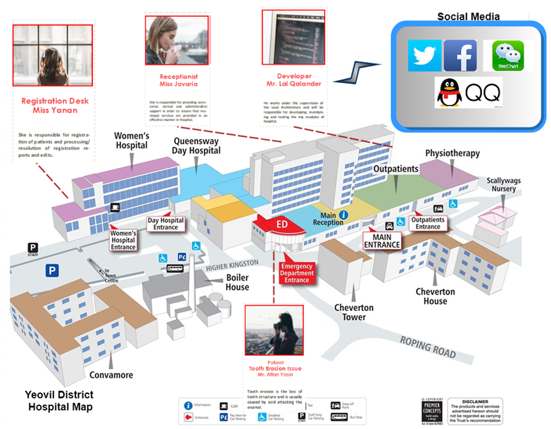

How persuasive is a phishing email? A phishing game for phishing awareness
Authors: Rubia Fatima, Affan Yasin, Lin Liu, Jianmin Wang
University: School of Software, Tsinghua University, Beijing, P.R.China
Keywords: Security and Privacy, Human and Social Aspects, Information Assurance, Social Engineering, Serious Game,
Collaborative Learning, Empirical Evaluation
Context: In the current era of digital technology, social engineers are using various tactics to undermine human weaknesses. Social Engineers target human psychology to achieve their target(s) which are in the form of data, account details, or IT devices etc. According to our research, one of the first methods social engineers used to target victims is Phishing/Spear Phishing. Objective: The objective of this study is to utilize serious game to: i) educate players regarding phishing and spear- phishing attacks; ii) make aware and educate players regarding dangers associated with excessive online information disclosure. Method: In order to address the objectives we have: i) performed an in-depth literature review to extract insights related to social engineering, phishing, game design, learning functions, human interaction, and game-based learning etc; ii) proposed and aligned the game design with social engineering ontology concepts; iii) performed an empirical evaluation to evaluate the effectiveness of the designed board game. Conclusion: From this research study, we conclude that: i) PhishI game is useful in educating players regarding excessive online information disclosure and phishing awareness; ii) game-based learning is an effective method for inculcating and general cyber-related awareness in players.
Scenario Based Learning is one of the ways where participants create scenarios in an hypothetical (game) scenario and further learn by brainstorming, interaction, and discussion. The same concept is used in building an hypothetical environment using storyline and game map. Storyline of the Game: The Yeovil district hospital recently announced a prize for anyone who can hack into their system and further tell them possible weaknesses in their security system. You, as a specialized team of hackers, are given the task to get that system down. So far, by initial analysis, it is seen that they have used one of the best security systems and software which makes it near impossible to hack by usual ways. Furthermore, the only possibility is through phishing or spear phishing attacks. You people are provided with important information extracted from social media (profiles) of the employees. Focus on one employee and try to gather as many information from the social media (Open Source intelligence). Then, draft a phishing email so that victim can install malware by this method and finally, by this way, you can undermine the system. Hospitals are and will be the target of ransomware attacks in future [38]. This is the main reason our first design of the game depicts hospital as an organization. Furthermore, the motivation of creating a controlled environment is taken from [34].
Behind any game, there is a body of knowledge and skills that is being practised. We have used Mouton's social engineering ontology [8] as the design know-how of the game. As the focus of the game is on Phishing awareness we have only designed the attacks related to phishing.
We are living in a world where physical conflicts have now moved to the cyber space, which is be- coming an ever more insecure place [78]. In this situation, security awareness is of vital importance. Thus, this makes it more necessary than ever to devise a mechanism for better security awareness [79]. To draw the attention of all user groups, we need a method that is more engaging and easy to use [80]. We know that awareness training methods are only effective if used properly [79]. In the past decades, more and more effort is spent on making the operating system and network environment secure. Due to this, attackers have changed their targets from information systems to human elements to break into or- ganizations. The number of attacks in the recent past include attackers who have used social engineering as their method of invasion in target organizations [81]. This paper introduced PhishI as a systematic approach to design serious games for security education. We define a game design framework that integrates the body of knowledge on social engineering, the psychological needs of organizational players, and the candidate game pattern that serve different needs. We use spear phishing as a key example to show how the proposed approach works, and then evaluated the learning effects of the generated game based on empirical data collected from student activity. In PhishI game participants are required to swap phishing emails and be able to comment on the effective- ness of the attack scenario, the effectiveness of this method can be justified as this method of evaluation is used in recent designed games such as [31, 35]. Our results showed that students’ awareness of spear phishing risks is improved and that the resistance to potential first attack contact is enhanced. Further- more, the game showed positive effect on participants’ understanding of excessive online information disclosure. In future, we are planning to design and develop an automated tool supporting the game composition process, with knowledge repository of known phishing attack scenarios. Thus, some functionalities as shown by of the game PhishI will be shifted online.
Rubia Fatima, Affan Yasin, Lin liu*, Wang Jianmin ‘How Persuasive Is a Phishing Email? A Phishing Game for Phishing Awareness’. Journal of Computer Security (JCS) 1 Jan. 2019 : 581 – 612. [Link].